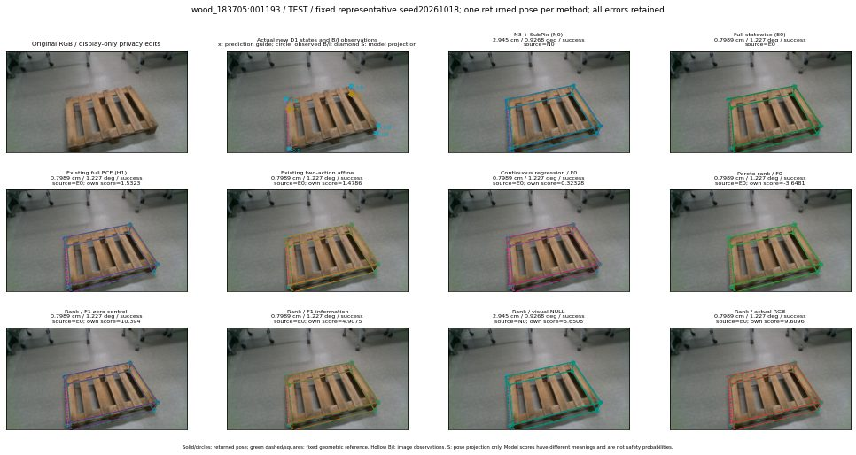

실선은 반환 자세, 초록 점선은 고정 기하 참조입니다. S는 영상 관측이 아닙니다. 점수는 모델별 의미가 다르며 보정된 안전 확률이 아닙니다. 개인정보 처리는 표시 사본에만 적용했습니다.
| 방법·seed | 위치 / 회전 / 공동성공 | 실제 출처 | 선택 후보 | 각 모델 자체 점수 |
|---|---|---|---|---|
| N0 | 2.945 cm / 0.9268 deg / success | N0 | N/A | N/A |
| E0 | 0.7989 cm / 1.227 deg / success | E0 | N/A | N/A |
| E0_REGENERATED | 0.7989 cm / 1.227 deg / success | E0 | E0_REGENERATED | N/A |
| POSEFIX_SUBPIX_PF_ANCHOR | 3.069 cm / 0.867 deg / success | OTHER | N/A | N/A |
| POSEFIX_SUBPIX_YOLO_ANCHOR | 3.069 cm / 0.867 deg / success | OTHER | N/A | N/A |
| D1_H1_MLP_s20261018 | 0.7989 cm / 1.227 deg / success | E0 | E0_REGENERATED | 1.5322788953781128 |
| D1_H1_MLP_s20261019 | 0.7989 cm / 1.227 deg / success | E0 | E0_REGENERATED | 1.242234230041504 |
| D1_H1_MLP_s20261020 | 0.7989 cm / 1.227 deg / success | E0 | E0_REGENERATED | 2.2950828075408936 |
| D1_H1_PAIR_MLP_s20261018 | 0.7989 cm / 1.227 deg / success | E0 | E0_REGENERATED | 0.28834977746009827 |
| D1_H1_PAIR_MLP_s20261019 | 0.7989 cm / 1.227 deg / success | E0 | E0_REGENERATED | 1.098332166671753 |
| D1_H1_PAIR_MLP_s20261020 | 0.7989 cm / 1.227 deg / success | E0 | E0_REGENERATED | 1.1819748878479004 |
| D1_H1_PAIR_ROLE_AFFINE_s20261018 | 0.7989 cm / 1.227 deg / success | E0 | E0_REGENERATED | 1.478594183921814 |
| D1_H1_PAIR_ROLE_AFFINE_s20261019 | 0.7989 cm / 1.227 deg / success | E0 | E0_REGENERATED | 1.6729367971420288 |
| D1_H1_PAIR_ROLE_AFFINE_s20261020 | 0.7989 cm / 1.227 deg / success | E0 | E0_REGENERATED | 1.2122682332992554 |
| R_CONT_F0_s20261018 | 0.7989 cm / 1.227 deg / success | E0 | E0_REGENERATED | 0.3232770264148712 |
| R_CONT_F0_s20261019 | 0.7989 cm / 1.227 deg / success | E0 | E0_REGENERATED | 0.42127951979637146 |
| R_CONT_F0_s20261020 | 0.7989 cm / 1.227 deg / success | E0 | E0_REGENERATED | 0.4402419626712799 |
| R_ORDER_F0_s20261018 | 0.7989 cm / 1.227 deg / success | E0 | E0_REGENERATED | -3.648071527481079 |
| R_ORDER_F0_s20261019 | 0.7989 cm / 1.227 deg / success | E0 | E0_REGENERATED | -4.825704574584961 |
| R_ORDER_F0_s20261020 | 0.7989 cm / 1.227 deg / success | E0 | E0_REGENERATED | -3.0062096118927 |
| R_ORDER_F1_ZERO_s20261018 | 0.7989 cm / 1.227 deg / success | E0 | E0_REGENERATED | 10.39428997039795 |
| R_ORDER_F1_ZERO_s20261019 | 0.7989 cm / 1.227 deg / success | E0 | E0_REGENERATED | 1.8572787046432495 |
| R_ORDER_F1_ZERO_s20261020 | 0.7989 cm / 1.227 deg / success | E0 | E0_REGENERATED | 4.315540790557861 |
| R_ORDER_F1_s20261018 | 0.7989 cm / 1.227 deg / success | E0 | E0_REGENERATED | 4.907528400421143 |
| R_ORDER_F1_s20261019 | 0.4865 cm / 0.6517 deg / success | OTHER | WD0/ORIGINAL_WD/selected | 7.148509502410889 |
| R_ORDER_F1_s20261020 | 0.7989 cm / 1.227 deg / success | E0 | E0_REGENERATED | 1.8655177354812622 |
| V_ORDER_NULL_s20261018 | 2.945 cm / 0.9268 deg / success | N0 | N0 | 5.650803089141846 |
| V_ORDER_NULL_s20261019 | 0.4865 cm / 0.6517 deg / success | OTHER | WD0/ORIGINAL_WD/selected | 3.2232439517974854 |
| V_ORDER_NULL_s20261020 | 0.7989 cm / 1.227 deg / success | E0 | E0_REGENERATED | 1.659118413925171 |
| V_ORDER_RGB_s20261018 | 0.7989 cm / 1.227 deg / success | E0 | E0_REGENERATED | 9.60962963104248 |
| V_ORDER_RGB_s20261019 | 0.4865 cm / 0.6517 deg / success | OTHER | WD0/ORIGINAL_WD/selected | 3.9843356609344482 |
| V_ORDER_RGB_s20261020 | 0.4865 cm / 0.6517 deg / success | OTHER | WD0/ORIGINAL_WD/selected | -6.49414587020874 |